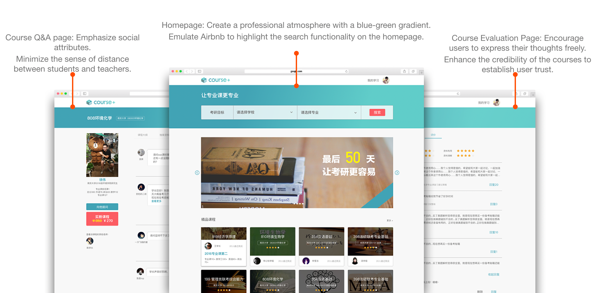

Web UI Design - Course+
Project Introduction
Course+ is an online tutoring and live streaming platform tailored for graduate education. Users can choose their preferred teachers on the website, purchase courses for postgraduate entrance exam preparation, and engage in learning through live sessions, exclusive material downloads, etc. The platform aims to provide a credible space for aspirants preparing for postgraduate entrance exams.
Target Users
The platform caters to prospective graduate students interested in applying to Nanjing University. It also targets students who wish to learn from enrolled Nanjing University graduate students but face constraints such as time and location that make offline teaching inconvenient.
My Contributions
This marked my first complete commercial project as a dedicated UI designer. I was responsible for crafting all visual specifications, designing visual drafts, and promotional materials. Additionally, I engaged in numerous discussions with the product manager regarding the rationality of the interaction design. I also collaborated with frontend developers to discuss technical implementation, accumulating valuable practical experience.
Project Background
The Course+ project was my first full-scale commercial project during my internship at a company in my third year of university. It falls under the B2B category. The project adopted the Scrum framework for development and used Teambition for project management. The goal was to develop approximately 80% of the functionality within a two-week sprint. This posed a considerable challenge for product managers, designers, and developers alike.

Competitor Analysis

NetEase Cloud Classroom
Pros:
- Reasonable course categorization with convenient breadcrumb navigation for user guidance.
- Excellent introduction of instructors, creating a celebrity teacher effect.
Cons:
- Overly complex homepage content, too many colors leading to potential user fatigue.
- Poor user experience in live courses.
- Confusing with two styles of players.

Tencent Classroom
Pros:
- Good live streaming experience, emotionally resonant design.
- Clear and concise homepage, better professional feel.
Cons:
- Confused logic on personal pages, making it difficult to find courses.
- Too many levels of course hierarchy, resulting in deep navigation.

Airbnb
Pros:
- Clean homepage design, search design aligns with user psychology.
Cons:
- Difficulty in finding the bookmark feature.
- Low completion level of localization.
Design Solution Finalized
After thorough discussions with the entire development team, we have decided to adopt Ant, the frontend development framework from Ant Financial's design platform. Consequently, I have chosen to utilize ant.design as the overarching design language for the entire project. For further details on ANT DESIGN, please refer to the official website.。
UX Design Showcase
Course+ project utilizes Modao (modao.cc) for UX design. Modao is an online product prototype design and collaboration tool.
To view the complete set of interactive diagrams for Course+, please click on the following link: Complete Interactive Diagrams
UI Design Handover and Specifications


UI Design Showcase
